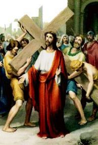
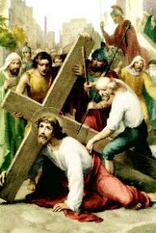
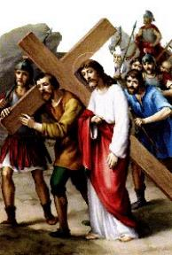
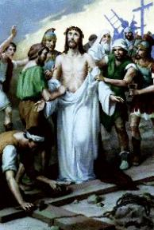
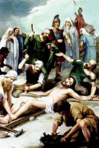
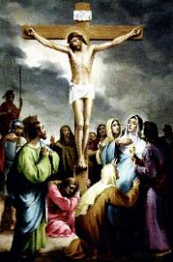

- A Cruz é um antigo instrumento bárbaro de suplício, usado por vários
- A Cruz é um antigo instrumento bárbaro de suplício, usado por vários povos para executar os condenados a morte.
povos para executar os condenados a morte.
Era constituída por uma haste vertical de aproximadamente 3 metros e meio de comprimento, denominada “estipe”, que era cravado 1 metro de profundidade no local da crucificação, e um pau horizontal chamado “patíbulo”, que era transportado pelo condenado. No lugar determinado para a crucificação, colocavam o "patíbulo" no chão e deitavam o réu sobre ele, fixando os seus pulsos com cravos de ferro. A seguir, com forquilhas de madeira, levantavam o "patíbulo" com o crucificado enganchando-o na parte superior do "estipe" formando um "táu" (T). As duas peças eram amarradas e unidas com cravos de ferro. A seguir, fixavam os pés do condenado no "estipe", colocando um sobre o outro e ambos eram atravessados por um único cravo.
Este tipo de Cruz era o mais usado e chamava-se “Cruz Comissa”.


- Os condenados transportavam o patíbulo nas costas, um grosso pau
com cerca 2,20 metros de comprimento, pesando aproximadamente 35 quilos, percorriam
a distância de mais ou menos 600 metros, que separava o Tribunal Romano na Fortaleza
Antônia do Calvário, em hebraico "Gólgota"
, também denominado lugar das Caveiras, onde eram
crucificados.
Muita gente, na maioria curiosa acompanhou o percurso de JESUS.
Alguns gritavam imprecações e xingamentos, enquanto outros penalizados, choravam e lamentavam o seu sofrimento.
Numa ladeira calçada com pedras, com boa declividade, ELE tropeça e cai pela primeira vez, batendo o joelho esquerdo com força no piso, esfolando e ferindo-o, por causa do peso da Cruz.
Os soldados que O escoltavam, severos e cruéis, com os chicotes O forçaram a levantar-se e continuar a caminhada.
Nas ruas, por onde passava, a multidão se espremia contra as paredes das casas, pois todos queriam avidamente presenciar os lances que aconteciam.
- No meio do povo estavam os Discípulos e as Santas Mulheres, que
tristes e cheias de pesar, acompanhavam o trajeto. ELE cansado fez uma pausa. Seu
Corpo estava coberto de feridas que sangravam abundantemente. Ao erguer a Face,
depara com o olhar triste e amargurado de Maria, sua Mãe, que sofria e chorava ao
presenciar tanta torpeza e a desumanidade que faziam com ELE, sem que Ela
pudesse fazer alguma coisa para minorar as dores e o cansaço de seu Divino
FILHO.
 Os soldados impiedosos O chicotearam outra
vez, colocando-O em movimento. Mais uns passos... Mais uma distância percorrida...
A fadiga e a exaustão já estavam tomando conta DELE.
Os soldados impiedosos O chicotearam outra
vez, colocando-O em movimento. Mais uns passos... Mais uma distância percorrida...
A fadiga e a exaustão já estavam tomando conta DELE.
Agora passaram a porta de Efraim, um dos portões de acesso à cidade de Jerusalém, que era cercada por muros elevados.
A esta altura do percurso, muitas pessoas que já conheciam aquelas cenas, debandaram.
O SENHOR estava tão fraco e debilitado, pela noite mal dormida no Pretório, pela falta de alimentação e pelos maus tratos, que caminhou uma certa distância e caiu pela segunda vez.
Em sentido contrário vinha Simão que estava trabalhando no campo. Era natural de Cirene e por isso mesmo, tinha o apelido de “o cirineu”.
Os soldados observando que JESUS estava sucumbindo, obrigaram o cirineu a carregar a Cruz para ELE.
Junto ao SENHOR caminhavam dois outros condenados. Eram ladrões que não tinham recebido o indulto de Pilatos.
Subindo o morro do Calvário, ELE viu ao lado do caminho diversas mulheres de Jerusalém, que choravam e lamentavam a sua crucificação. Olhando para elas, disse:
“Filhas de Jerusalém, não choreis por MIM; chorai, antes, por vós mesmas e por vossos filhos! Pois, eis que virão dias em que se dirá: Felizes as estéreis, as entranhas que não conceberam e os seios que não amamentaram! Então começarão a dizer às montanhas: Caí sobre nós! E as colinas: cobri-nos. Porque se fazem assim com o lenho verde, o que acontecerá com o seco?”(Lc 23,28-31)
ELE disse, que se faziam assim com o
“lenho verde”, que não
devia ser queimado, fazendo alusão ao seu suplício, o que então se fará ao
“lenho seco”, isto é,
aos verdadeiros culpados, aqueles que merecem ser castigados?
fazendo alusão ao seu suplício, o que então se fará ao
“lenho seco”, isto é,
aos verdadeiros culpados, aqueles que merecem ser castigados?
- Chegando ao Calvário, tropeça e cai pela terceira vez. Seu Corpo
já não resistia mais qualquer esforço... Na companhia das Santas Mulheres, Maria
observava heroicamente aquele terrível drama de seu FILHO. Cada detalhe daquele
brutal espetáculo, a comovia de angústia e horror.
Ofegante, ELE permaneceu caído ao chão.
Algumas mulheres judias pesarosas e movidas de compaixão com o sofrimento DELE, ofereceram-LHE de beber uma mistura de vinho e mirra, que tinha efeito entorpecente. (Mt 27,34)(Mc 15,23)
Mas ELE não quis.
O cirineu deixou a Cruz ao lado de JESUS, enquanto os soldados crucificavam os dois ladrões.







- A seguir vieram até JESUS, tiraram-LHE a túnica e a veste íntima e o deitaram sobre o madeiro, pregando primeiro a Mão direita, enfiando um
cravo de ferro com força, que atravessou o pulso e fixou seu braço no patíbulo,
jorrando Sangue em quantidade pelos vasos sanguíneos dilacerados em face da
brusca penetração do cravo. Da mesma maneira pregaram a Mão esquerda.
íntima e o deitaram sobre o madeiro, pregando primeiro a Mão direita, enfiando um
cravo de ferro com força, que atravessou o pulso e fixou seu braço no patíbulo,
jorrando Sangue em quantidade pelos vasos sanguíneos dilacerados em face da
brusca penetração do cravo. Da mesma maneira pregaram a Mão esquerda.
Levantaram e fixaram um madeiro no outro, pregando com firmeza a junção dos páus e depois, colocaram o Pé direito DELE apoiado no "estipe" e encima, puseram o Pé esquerdo, e Os atravessaram com um único cravo, ficando suas Pernas fixadas no pau vertical.
Agora, ELE estava definitivamente pregado a Cruz...
De seus Pulsos rasgados, saiam grande quantidade de Sangue que corria pelos braços em direção aos Ombros. Também das veias rompidas nos Pés escorria o precioso líquido Divino, que descia e manchava o madeiro.
À direita de JESUS, Germa, um dos ladrões crucificados com ELE, insultou-O e debochando de Seu poder Divino, falou:
“Não és TU o Messias? Salva-te a TÍ Mesmo e a nós”.(Lc 23, 39)
Muito embora não tivesse respeito e nem acreditasse no SENHOR, provocou-O para que ELE fizesse alguma coisa, porque sabia que daquele jeito como estava pendurado na cruz, não havia solução, ia morrer mesmo, e ele queria a liberdade e a vida. Raciocinava que a única esperança era se ELE realmente “tivesse poderes” e resolvesse fazer um milagre, para salvar as suas vidas.
O outro ladrão da esquerda, chamado Dimas, olhou para o companheiro e o censurou:
“Nem sequer temes a DEUS, estando na mesma condenação? Quanto a nós, é de justiça; estamos pagando por nossos atos; mas ELE não fez nenhum mal.” E acrescentou: “JESUS, lembra-Te de mim, quando vieres com Teu Reino”.(Lc 23,40-42)
- O SENHOR respondeu: “Em
verdade, eu te digo, hoje estarás comigo no Paraíso”.(Lc 23,43)
 Os soldados que estavam embaixo das cruzes, mantiveram-se
indiferentes ao diálogo entre os crucificados. Pegaram a veste de JESUS e dividiram-NA
em quatro partes, uma para cada um, e lançaram sorte sobre a túnica, que era inteiriça,
cumprindo-se desta forma, mais uma profecia sobre ELE.
Os soldados que estavam embaixo das cruzes, mantiveram-se
indiferentes ao diálogo entre os crucificados. Pegaram a veste de JESUS e dividiram-NA
em quatro partes, uma para cada um, e lançaram sorte sobre a túnica, que era inteiriça,
cumprindo-se desta forma, mais uma profecia sobre ELE.
Pilatos mandou fazer uma placa escrita em hebraico, latim e grego: “JESUS Nazoreu, o Rei dos judeus”.(Jo 19,19) E mandou fixa-la na Cruz, para que todos vissem o motivo da condenação.
Transeuntes que passavam por ali, vendo a placa que Pilatos mandou fixar na Cruz de JESUS, injuriavam-NO e zombavam DELE.
As dores e as câimbras causadas pela posição incomoda e pelo esforço em calcar os pés contra o madeiro a fim de levantar o tórax e poder respirar, aumentaram de modo dramático. Começava a agonia do SENHOR.
Apesar do cruel padecimento, com o Corpo coberto de chagas e as feições completamente deformadas, de seu olhar triste e cansado, transparecia uma amorosa expressão de resignação. Levantando a Cabeça e buscando com o olhar a imensidão do infinito, pronunciou:
“PAI, PERDOAI-LHES: NÃO SABEM O QUE FAZEM”.(Lc 23, 34)
Apesar de estar sofrendo terrivelmente o drama da crucificação, JESUS encontrou forças para perdoar a humanidade, principalmente àqueles que LHE causaram tanto mal.
Em Jerusalém, aproximávamos da nona hora (l5 horas). A lua cobriu os raios do sol, consumando um longo eclipse, que derramou trevas sobre toda aquela região. Era como se a natureza escandalizada com aqueles atos mesquinhos e absurdos, estivesse triste, e lançasse a escuridão como forma de protesto, mostrando que estava enlutada pelas maldades e sofrimentos infligidos ao FILHO DE DEUS.
Embaixo da Cruz, estava Maria, sua MÃE ao lado das Santas Mulheres e João, o Discípulo que ELE amava.
- Abrindo os olhos, fixou-os em Maria e disse:
“MULHER, EIS O TEU
FILHO!”(Jo 19, 26)
Referia-se a João Evangelista, o Discípulo
“amado”, que estava
ao lado de sua MÃE. Com este procedimento o SENHOR estabeleceu
uma primeira corrente amorosa, de sentido descendente, ou seja, de cima para baixo.
Considera João representando toda humanidade. Assim, com o mesmo amor que amava
João, ELE agora revelava que também ama a humanidade inteira. Por isso, é desejo
DELE que todas as gerações procurassem se inspirar no comportamento e na dedicação
de João, assim como na sua fidelidade e no seu amor sincero, que demonstrou sem medo
dos judeus, até no cruel momento da crucificação. Porque somente dessa maneira,
a humanidade mostrará ao SENHOR que é agradecida pela Sua admirável e
benéfica Obra e por sua fraterna e paternal amizade.
A seguir, agora olhando para João, ELE disse:
“EIS A TUA MÃE!”
E mostrou-lhe Maria que estava ao seu lado.
Esta segunda corrente amorosa tem um
fluxo ascendente, ou seja, de baixo para cima. João o discípulo que o SENHOR
mais amava, continuava a representar a humanidade. Então, JESUS fez uma
comunicação preciosa: ELE nos deu a sua MÃE! Maria repleta de graças pelo
CRIADOR, escolhida para MÃE DE DEUS pelo Altíssimo, agora nos era dada
por ELE, para ser a Mãe Espiritual da humanidade de todas as gerações. Sem
dúvida, foi um presente admirável, o melhor de todos, afinal. Por outro lado,
como consequência dessa determinação do SENHOR, Maria assumiu
verdadeiramente o dom de ser
"nossa Mãe",
com o mesmo amor e ternura que dedicava a JESUS, passando a interceder
em nosso benefício junto a DEUS, ajudando, inspirando e protegendo todos
os seus filhos contra as Assim sendo, para que as correntes
amorosas estabelecidas no testamento do FILHO DE DEUS funcionem
adequadamente, é necessário que apresentem um fluxo de utilização intenso,
nos dois sentidos. Maria é nossa Mãe, a Ela devemos recorrer em todas as
ocasiões e nas dificuldades do cotidiano, a fim de que Ela junto de JESUS
alcance do CRIADOR as graças necessárias ao nosso bem-estar, o que
sempre acontece quando invocamos a sua eficaz e tão carinhosa proteção.
Mas, de modo identico, devemos nos portar como filhos Dela, com dignidade,
cumulando-a de atenções através de nossas orações e de uma ativa participação
nos eventos em sua honra, revelando a nossa fiel e sincera devoção filial. Pois
só assim, nós e NOSSA SENHORA iremos atender o derradeiro desejo de
JESUS, sermos os filhos Dela e irmãos DELE. Considerando que Ela é
sempre pontual e nunca nos abandona, efetivamente vai depender de nosso
comportamento pessoal, se queremos seguir os passos do SENHOR.
“DEUS MEU, DEUS MEU,
PORQUE ME ABANDONASTE?”(Mt 27, 46)
Mas logo abaixou a cabeça e silenciou, a exemplo
de como havia procedido no Getsêmani. Lá ELE aceitou heroicamente todos os atos de
sua prisão. Aqui também, na certeza de ter cumprido integralmente a Obra que o
PAI ETERNO lhe confiou, silenciou sua voz, aceitando morrer daquela maneira,
como se estivesse abandonado pelo CRIADOR.
“TENHO SEDE!”(Jo 19, 28) Um dos guardas, fixando uma esponja na
extremidade de sua lança, num gesto de compaixão, molhou-a no vinagre contido
num recipiente que estava no chão e levantou até os lábios DELE. ELE não aceitou. Verdadeiramente a
“sede” de JESUS não
era de água, mas sede de amor e de justiça, sede de maior compreensão e tolerância
entre as pessoas, sede de harmonia para que exista uma convivência pacífica no
mundo, sede de fidelidade e perseverança no caminho do “bem”. Somente saciando esta “sede” do SENHOR, a humanidade
conseguirá cumprir de modo digno a missão da vida que ELE nos confiou, encontrará
a paz e a felicidade no cotidiano, e sentirá em sua existência a presença permanente
e constante do SENHOR, inspirando as decisões, dando discernimento
e sabedoria, protegendo contra as ciladas do maligno e infundindo disposição
no trabalho para a realização de todos os empreendimentos.
E por fim, voltando a sua Divina Cabeça em
direção ao nosso coração, despediu-se dizendo que havia terminado o ensinamento:
“ESTA TUDO CONSUMADO!”
(Jo 19, 30)
Hoje, ficamos impressionados ao lermos
a trajetória existencial do SENHOR, pela exatidão de sua Obra, pela perseverança
em executá-la com tanta perfeição e de maneira integral, assim como pela Sua
fidelidade ao PAI ETERNO e a profunda demonstração de seu amor abrangente a
humanidade de todas gerações. Somente um DEUS cheio de bondade, com um
coração imenso, repleto de carinho e pleno de misericórdia, é que poderia sofrer um
martírio tão severo e cruel, como JESUS sofreu!
Só um DEUS feito de amor e ternura, é que se
preocuparia em resgatar a humanidade que não O merece, porque as gerações
sempre se portaram de modo infiel, insensível e atroz!
Por tudo isso, é imperioso reconhecermos a grandeza da
Obra do SENHOR em benefício de todos nós e nos preocuparmos, apesar das nossas limitações e
fraquezas, em retribuir-LHE de alguma forma, com orações e sacrifícios, enriquecendo e
dilatando nossa consciência cristã, ajudando aos necessitados e aqueles menos favorecidos,
tratando as pessoas como nossos irmãos em CRISTO, vendo em cada semelhante a
imagem querida de nosso DEUS e assim, empenhando sempre em buscar uma
forma de nos aproximarmos DELE, de cativarmos a sua amizade e ganharmos a sua
adorável companhia. No Monte Calvário, JESUS exalava o seu derradeiro
suspiro. Voltando os olhos para o Céu, como se estivesse anunciando a sua
chegada, falou:
“PAI, EM TUAS MÃOS
ENTREGO O MEU ESPÍRITO”.(Lc 23, 46)
Pregado ao madeiro, numa posição incomoda,
JESUS desenvolveu um esforço incalculável para manter-se vivo, forçando os pés
na haste vertical para levantar a caixa torácica e poder respirar, dando ao mundo
conhecimento de seu testamento e de sua Última Vontade. E foi com muita
dificuldade que projetando o Corpo para frente, conseguiu manter-se elevado,
naturalmente depois de várias tentativas sem sucesso. Contudo, à medida que
passava o tempo, as câimbras terríveis foram apoderando-se de seus Braços e
funestamente das Pernas, que O forçou a vigorosos movimentos para poder
respirar, e de tal ordem, que num impulso mais violento, fissurou as paredes
cardíacas, provocando a ruptura do Coração, morrendo instantaneamente,
após um triste e doloroso grito de agonia. (conforme os estudos do médico
francês Dr. Pierre Barbet) “De fato, este Homem era
o FILHO DE DEUS!”(Mc 15, 39)
Como entardecia e era o “Parasceve” [Sexta-feira,
véspera do “Shabat”
(Sábado, dia santificado dos judeus, como o Domingo é o dia santificado dos
cristãos)] sem notícias dos crucificados, Pilatos mandou quebrar a perna dos
condenados para acelerar a morte. Era um costume bárbaro, mas também utilizado
pelos romanos. Com as pernas quebradas, os condenados não podiam firmar o pé
no madeiro para levantar o tórax e respirar, e por isso, em poucos minutos
morriam por asfixia. O motivo de Pilatos mandar acelerar a morte dos condenados
é porque estando na tarde do "Parasceve"
, véspera do "Shabat"
, pela lei, os condenados não podiam continuar nas cruzes.
Chegando ao Gólgota para cumprir a ordem do
Governador, os soldados viram que os dois ladrões estavam vivos. Quebraram-lhes
as pernas com uma barra de ferro e em poucos minutos morreram. Chegando a JESUS,
observaram que estava morto, por isso não LHES quebraram as pernas. Todavia,
para ter a certeza, um centurião chamado Longino cravou sua lança com força
no lado direito do SENHOR. A lança penetrou no espaço intercostal, entre a 5ª
e 6ª costela, atravessou a pleura que é uma membrana serosa que envolve o pulmão,
ultrapassou o pericárdio, que é uma membrana serosa que envolve o coração e
alcançou a aurícula direita do Coração do Redentor, conforme estudos feitos
pelo médico francês Dr. Pierre Barbet. Imediatamente saiu sangue e água.
 insídias do maligno, a fim de que
agissemos com justiça, dentro do direito e sobretudo, que cultivassemos
a amizade e o amor de DEUS. Assim, a partir daquele momento, Maria transformou-se
numa “imensa ponte”, numa ligação maravilhosa e perfeita, que permite a todos
que a “utilizam", encontrar o caminho mais curto e mais seguro, em direção
ao CRIADOR. - A escuridão provocada pelo eclipse, ainda permanecia negra
e densa, quando se aproximava a hora nona (15 horas). JESUS olhando para
o firmamento, deu um grande grito:
insídias do maligno, a fim de que
agissemos com justiça, dentro do direito e sobretudo, que cultivassemos
a amizade e o amor de DEUS. Assim, a partir daquele momento, Maria transformou-se
numa “imensa ponte”, numa ligação maravilhosa e perfeita, que permite a todos
que a “utilizam", encontrar o caminho mais curto e mais seguro, em direção
ao CRIADOR. - A escuridão provocada pelo eclipse, ainda permanecia negra
e densa, quando se aproximava a hora nona (15 horas). JESUS olhando para
o firmamento, deu um grande grito: A agonia do Calvário estava quase
completamente superada, eram os últimos momentos de padecimento na Cruz. Abrindo
os olhos, murmurou com sofreguidão:
- Inclinando a cabeça para frente, morreu. Eram 3 horas da tarde.
A
A agonia do Calvário estava quase
completamente superada, eram os últimos momentos de padecimento na Cruz. Abrindo
os olhos, murmurou com sofreguidão:
- Inclinando a cabeça para frente, morreu. Eram 3 horas da tarde.
A terra tremeu forte, fenderam-se as rochas, muitos túmulos se abriram,
dos quais ressuscitaram corpos dos justos, e misteriosamente, de maneira inexplicável,
o véu do Templo judeu rasgou-se ao meio. O Centurião que guardava os crucificados,
assim como muitos daqueles que se encontravam ali, vendo aquelas manifestações da
natureza ficaram admirados e acreditaram:
terra tremeu forte, fenderam-se as rochas, muitos túmulos se abriram,
dos quais ressuscitaram corpos dos justos, e misteriosamente, de maneira inexplicável,
o véu do Templo judeu rasgou-se ao meio. O Centurião que guardava os crucificados,
assim como muitos daqueles que se encontravam ali, vendo aquelas manifestações da
natureza ficaram admirados e acreditaram: